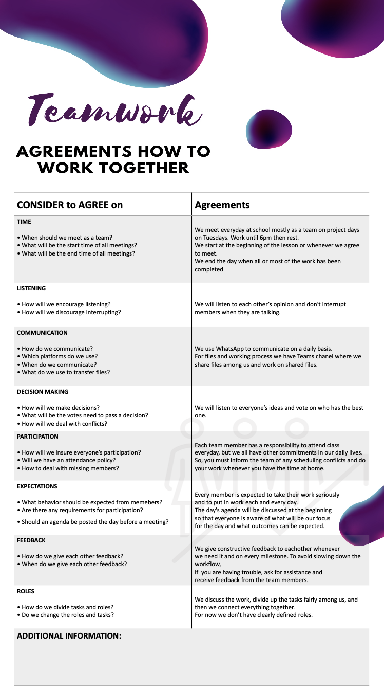
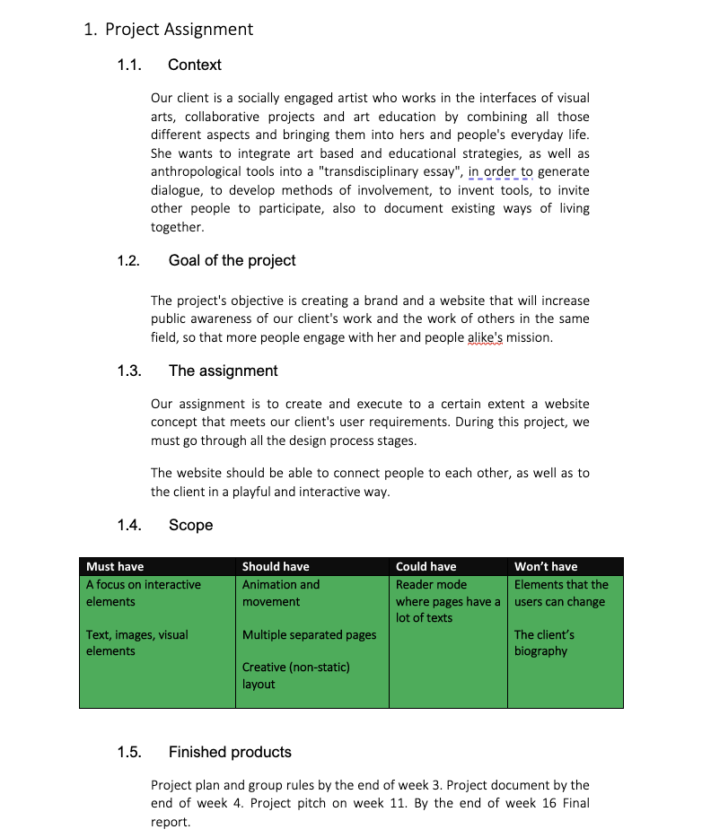
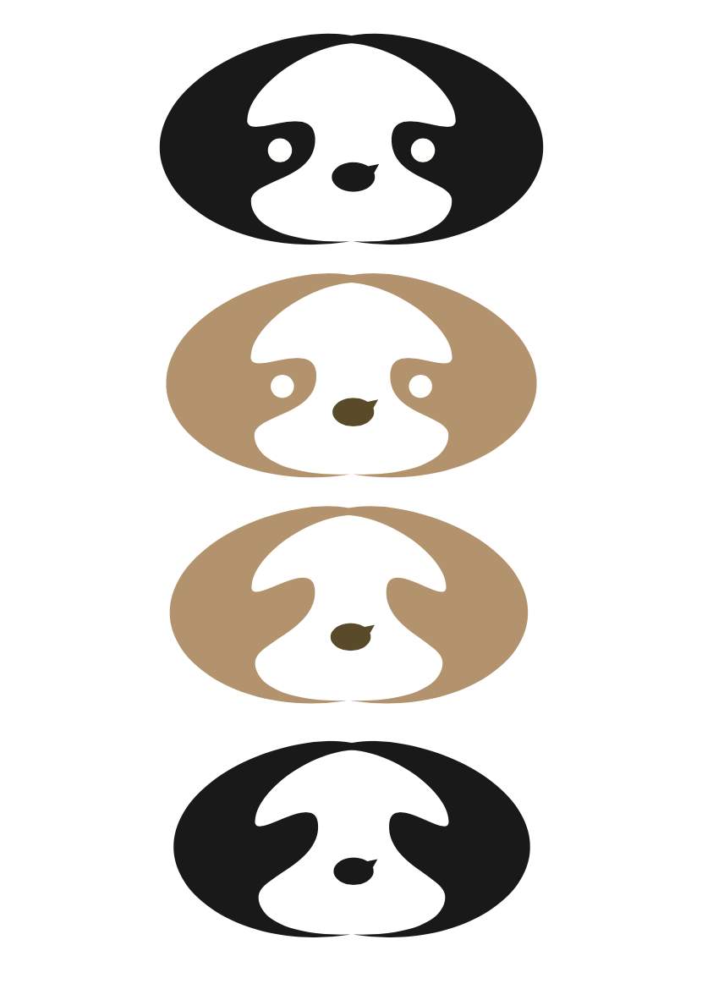
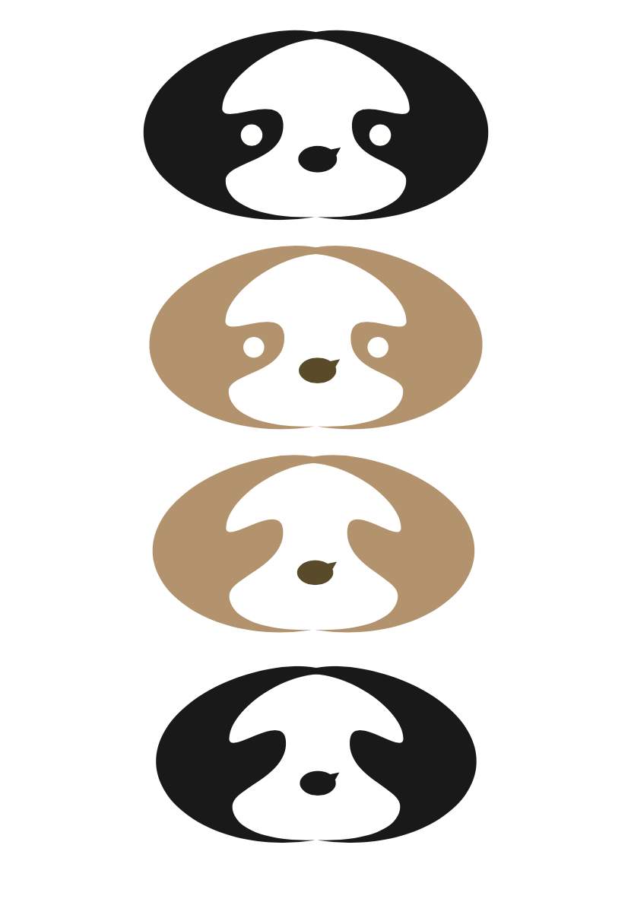

Group Project


 

×
The first thing we made as a group was to come up with agreements. We settled on some agreements, I wrote them all down and after that created the Agreements document itself.
Agreements document
×
After the Agreemnets document we started creating the Project Plan. I did the automatic table of contents and the risk assessments. Me and Hanga came up with the research questions, we wrote the research methods and connect them with the questions.
Project Plan
×
After we looked at the interviews with Eleni and her answers to the questions we asked we created our Artist Persona. We based it on Eleni's artistic visions are thoughts, because she mentioned that her main target group is researchers (people interested in her specie and her activities). I worked on the design of the persona - the colors, layout.
Artist Persona
×
After researching Eleni's specie we found that "bradipus" means sloth. From there we started brainstorming and we came up with our idea of the logo - sloth (representing slowing down) and two people huging with a chat bubble between them (representing conectivity). After the logo was done we printed it and we separeted in pairs and did some user testing. We asked people what they see in the logo. Here are my notes from my research:
My notes
Logo
{kind=link}
{kind=link}